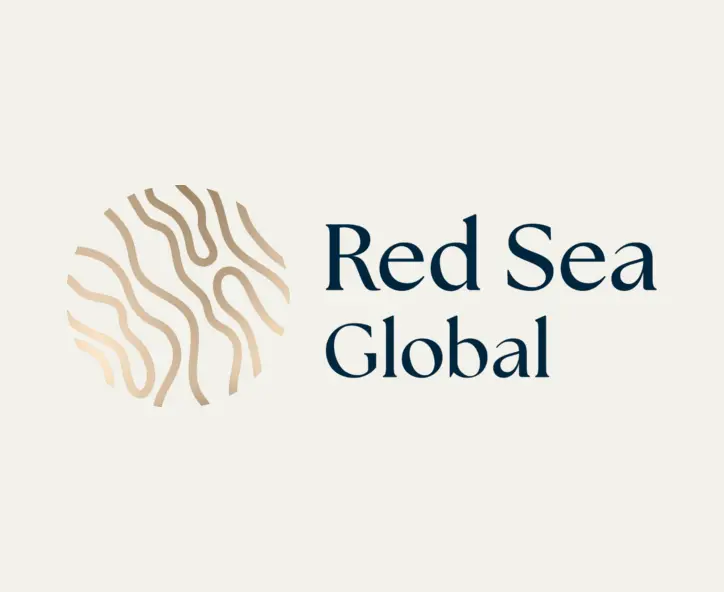

08TAQA
MODONIndustrial facility
MODONIndustrial facility
Industrial / Architectural BIM
Selected architectural & BIM work
Ten curated projects covering architectural design, BIM coordination, structural documentation, and technical delivery.
Filter the projects
Showing all 10 projects
8 selected sheets 8 selected sheets
8 selected sheets 8 selected sheets
8 selected sheets 2 selected sheets
2 selected sheets 8 selected sheets
8 selected sheets